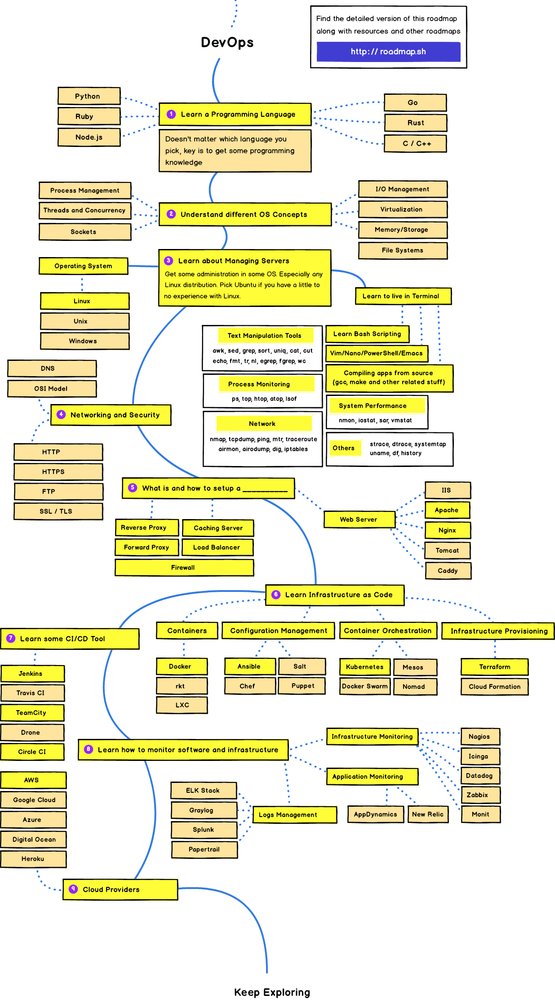

- 00 开篇词 从默默无闻到风靡全球，DevOps究竟有什么魔力？.md.html
- 01 DevOps的“定义”：DevOps究竟要解决什么问题？.md.html
- 02 DevOps的价值：数字化转型时代，DevOps是必选项？.md.html
- 03 DevOps的实施：到底是工具先行还是文化先行？.md.html
- 04 DevOps的衡量：你是否找到了DevOps的实施路线图？.md.html
- 05 价值流分析：关于DevOps转型，我们应该从何处入手？.md.html
- 06 转型之路：企业实施DevOps的常见路径和问题.md.html
- 07 业务敏捷：帮助DevOps快速落地的源动力.md.html
- 08 精益看板（上）：精益驱动的敏捷开发方法.md.html
- 09 精益看板（下）：精益驱动的敏捷开发方法.md.html
- 10 配置管理：最容易被忽视的DevOps工程实践基础.md.html
- 11 分支策略：让研发高效协作的关键要素.md.html
- 12 持续集成：你说的CI和我说的CI是一回事吗？.md.html
- 13 自动化测试：DevOps的阿克琉斯之踵.md.html
- 14 内建质量：丰田和亚马逊给我们的启示.md.html
- 15 技术债务：那些不可忽视的潜在问题.md.html
- 16 环境管理：一切皆代码是一种什么样的体验？.md.html
- 17 部署管理：低风险的部署发布策略.md.html
- 18 混沌工程：软件领域的反脆弱.md.html
- 19 正向度量：如何建立完整的DevOps度量体系？.md.html
- 20 持续改进：PDCA体系和持续改进的意义.md.html
- 21 开源还是自研：企业DevOps平台建设的三个阶段.md.html
- 22 产品设计之道：DevOps产品设计的五个层次.md.html
- 23 持续交付平台：现代流水线必备的十大特征（上）.md.html
- 24 持续交付平台：现代流水线必备的十大特征（下）.md.html
- 25 让数据说话：如何建设企业级数据度量平台？.md.html
- 26 平台产品研发：三个月完成千人规模的产品要怎么做？.md.html
- 27 巨人的肩膀：那些你不能忽视的开源工具.md.html
- 28 迈向云端：云原生应用时代的平台思考.md.html
- 29 向前一步：万人规模企业的DevOps实战转型案例（上）.md.html
- 30 向前一步：万人规模企业的DevOps实战转型案例（下）.md.html
- 期中总结 3个典型问题答疑及如何高效学习 (1).md.html
- 期中总结 3个典型问题答疑及如何高效学习.md.html
- 期末总结 在云时代，如何选择一款合适的流水线工具？.md.html
- 特别放送（一）成为DevOps工程师的必备技能（上）.md.html
- 特别放送（三）学习DevOps不得不了解的经典资料.md.html
- 特别放送（二）成为DevOps工程师的必备技能（下）.md.html
- 特别放送（五）关于DevOps组织和文化的那些趣事儿.md.html
- 特别放送（四）Jenkins产品经理是如何设计产品的？.md.html
- 结束语 持续改进，成就非凡！.md.html
- 捐赠
特别放送（一）成为DevOps工程师的必备技能（上）
你好，我是石雪峰，今天到了“特别放送”环节。有很多留言问道：“DevOps专家这个岗位，需要的技能和技术栈有哪些？成长路径是怎样的呢？”
我相信这应该是很多刚开始接触DevOps的同学最关心的问题。毕竟，从实用的角度出发，每个人都希望能够尽快上手实践。所以今天，我来跟你聊聊，我认为的DevOps工程师的必备技能以及学习路径。不过在此之前，我们要先了解DevOps工程师的岗位职责。
全球最大职业社交网站LinkedIn（领英）2018年发布的一份报告显示，当今全球最热门的招聘职位分别是DevOps工程师、企业客户经理和前端开发工程师。其中，排名第一的就是DevOps工程师。
无独有偶，2019年全球最大知识共享平台Stack Overflow的开发者调查报告显示，在薪资排行榜上，DevOps工程师排名第三，仅次于技术经理和SRE（网站可靠性工程师）。而在去年的调查报告中，DevOps工程师的收入甚至排名第二。
无论是人才市场需求，还是收入薪资水平，这种种迹象都表明，DevOps工程师已经成为了当今最炙手可热的岗位，收入也攀升至IT行业的金字塔顶端。难怪有越来越多的人开始接触和学习DevOps。
但是，DevOps这样一个刚刚诞生10年的“新兴事物”，并不像一门专业技术那样，有一条相对清晰的学习路径，以及经典的学习资料，比如你要学习Java，就可以从《Java编程思想》看起。
除此之外，DevOps似乎又跟软件工程的方方面面有着说不清的关系。我跟你分享一幅DevOps技能发展路线图，根据这幅路线图，你要从编程语言入手，理解操作系统原理、系统性能、网络安全、基础设施即代码、CI/CD、运维监控和云技术等等。

怎么样，是不是看到这么一堆名词就瞬间头大了吧？如果要把这些所有的技术全部精通，那至少得是CTO级别的岗位。对普通人来说，这并不太现实。毕竟，啥都懂点儿，但是啥都不精通，本身就是IT从业者在职业发展道路上的大忌。
如果要说清楚这个岗位，核心就是要回答3个问题：
- DevOps工程师在公司内承担的主要职责是什么？
- 为了更好地承担这种职责，需要哪些核心技能？尤其是从我接触过的这些公司来看，有哪些技能是当前最为紧俏的呢？
- 学习和掌握这些技能，是否存在一条可参考的路径呢？
接下来，我们就重点聊一聊这些内容。
DevOps工程师的岗位职责
关于DevOps工程师这个岗位，一直以来都存在着很大的争议。很多人认为DevOps应该是一种文化或者实践，而不应该成为一个全新的职位或者部门，因为这样会增加公司内部的协作壁垒。
其实，我倒觉得没有必要纠结于这个Title，因为很多时候，DevOps跟公司内部已有的角色存在着重叠。比如，开发变成了DevOps开发，运维变成了DevOps运维。另外，在不同的公司里面，类似角色的岗位名称也大不相同。比如，在DevOps状态报告中，DevOps就和SRE被归为一类进行统计。而在公司中实际负责推行DevOps的部门，至少我见过的就有工程效能团队、运维团队、配管团队，甚至还有项目管理团队。可见，不同公司对于DevOps工程师的职责定义也同样存在着差异。
但不管怎样，我觉得谈到DevOps工程师职责的时候，除了本职工作的内容以外，至少还应该额外关注3个方面：
1.工具平台开发
关于工具平台开发，争议应该是最小的，而且这也是很多公司推行DevOps的起点。因为工具是自动化的载体，而自动化可以说是DevOps的灵魂。随着公司规模越来越大，研发内部的协作成本也随之水涨船高，那么工具平台的能力水平就决定了公司交付能力的上限。
但问题是，因为种种原因，很多公司只有大大小小的分散工具，并没有一套完整的研发协同工作平台，这本身就制约了协作效率的提升。你可以想象一下，研发每天要在大大小小的系统里面“跳来跳去”，很多功能甚至还是重复的，这显然是很浪费时间的。
比如，你明明已经在代码托管平台上做了代码评审，结果提测平台上面还有个必填项是“你是否做过了评审？”是不是很让人抓狂呢？这背后的主要原因，就是缺乏顶层设计，或者压根就没有专人或者团队负责这个事情。这样一来，团队各自为战，发现一个痛点就开发一个工具，发现一个场景就引入一个系统，再加上考核指标偏爱从0到1的创造性工作，也难怪每个高T升级都要有自己的系统加持了。但如果任由这种趋势发展下去，内部的重复建设就难以避免了。
所以，对于DevOps工程师而言，除了要关注原有的工具重构、新功能的开发之外，更要聚焦于整个软件交付流程，将现有的工具全面打通，以实现可控的全流程自动化。也就是说，不仅仅要追求点状的工具，还要包括整条线上的工具链，从而形成覆盖软件交付完整流程的工具体系。
另外，工具平台同样是标准化流程的载体，同时也是DevOps实践的载体，所以在设计实现时，需要考虑这些实践的支持。举个例子，在配置管理领域，将一切纳入版本控制是不二法则。那么，在建设工具平台的时候，就需要始终有这样的意识，比如记录流水线的每一次配置变更的版本，并且能够支持快速的对比回溯。
2.流程实践落地
其次，无论是工具平台的推广落地，还是结合平台的流程改进，都需要有人来做。毕竟，即便是完全相同的工具，在不同人的手里，发挥的作用也千差万别，把好好的敏捷管理工具用成了瀑布模式的人也不是少数。而针对流程本身的优化，也是提升协作效率的有效手段。
比如在有的公司里，单元测试需要手动执行，那么当工具平台具备自动化执行的能力，并且能够输出相应的报告时，这部分的操作流程就应该线上化完成。再比如，以往申请环境需要走严格的线上审批流程，当环境实现自动化管理之后，这些流程都可以变为自服务，通过工具平台进行跨领域角色的交叉赋能，从而实现流程优化的目标。
另外，我接触过的一些公司倾向于在不改变流程的前提下，推动DevOps落地。坦率地说，这种想法是不现实的。如果流程上没有约束开发和测试共同为结果负责，那开发为什么要跟测试共同承担责任呢？出了问题又怎么可能不扯皮呢？因此，如果你在公司内部负责流程改进，遇到问题就应该多问几个为什么，找到问题的本源，然后将流程和工具相结合，双管齐下地进行改进。
所以，理念和实践的宣导，内部员工的培训，持续探索和发现流程的潜在优化点，这些也都是DevOps工程师要考虑的事情。
3.技术预研试点
最后，各种新技术新工具层出不穷，哪些适用于公司现有的业务，哪些是个大坑呢？如果适合的话，要如何结合公司的实际情况，评估潜在的工具和解决方案，而不是盲目地跟随业界最佳实践呢？类似技术债务的识别和偿还这种重要不紧急的事情，到底什么时候做合适呢？
另外，如果公司决定开始推行单元测试，那么，选用什么样的框架，制定什么样的标准，选择什么样的指标，如何循序渐进地推进呢？这些同样非常考验团队的功底。如果步子一下子跨得太大了，到最后就可能成为形式主义了。
你可能会觉得，我就是一个小开发、小运维，怎么能推动这么大的事情呢？但实际上，DevOps从来都不是某一个人，或者某一个角色的职责，而是整个研发交付团队所共享的职责。在你力所能及的范围内，比如在你所在的部门内部，开展DevOps的理念宣导和技术培训，鼓动领导参加行业的大会，在和上下游团队协作的时候向前一步，这些都是DevOps所倡导的自服务团队应该具备的能力。
DevOps工程师的主要技能
说完了DevOps工程师主要负责的事情，接下来我们就来看看DevOps工程师所要具备的能力。我从实用的角度出发，总结了DevOps工程师的核心能力模型。
其中，能力模型分为两个方面：专业能力和通用能力。专业能力也就是常说的硬实力，是IT从业人员身上的特有能力，比如软件工程师会写代码，就跟导演会拍电影，司机会开车一样。而通用能力，更加接近于软实力，这些能力并不局限于某一个岗位或者职业，是所有人都应该努力培养的能力。很多时候，当硬实力到达天花板之后，软实力的差异将决定一个人未来的高度，这一点非常重要。
软实力
我们今天先从软实力说起。在讲具体的软实力之前，我先跟你分享一个小故事。
我在国外听过这样一种说法：在企业中，印度裔的工程师往往比华裔工程师的岗位职级要高。为什么会这样呢？我曾经做过一个跨中美印三地的工程团队的负责人，我发现，每次我跟印度工程师交代一个事情，他们总能又快又好地做出一个特别清晰漂亮的PPT。我特意问过他们是怎么做到的。原来，他们在上学时受过这方面的训练，还专门练习过表达、演讲等技能，可见，事出必有因，软实力对个人的发展至关重要。
那么，作为一名DevOps工程师，需要具备什么软实力呢？
1.沟通能力
DevOps倡导的核心理念就是沟通和协作，所以，难怪沟通能力会排在软实力的第一名。
在推动DevOps落地的过程中，你需要同时具备向上沟通、向下沟通和横向沟通的能力。提炼DevOps实施框架和落地价值，寻求领导层的支持，需要向上沟通；打破组织间的边界，建立跨团队的协同，需要横向沟通；引导团队快速完善平台工具能力，表明工作的意义和价值，提升大家的主动性，需要向下沟通。所以你看，其实每天的工作中都充满了大量的沟通。
需要注意的是，沟通能力不仅限于语言能力，很多时候，开发运维的沟通是基于代码完成的。所以，良好的注释风格、清晰结构化的描述方式……这些细节往往也能提升沟通的效率。
比如有一种很DevOps的方式，就是ChatOps，是以GitHub的Hubot为代表的对话式运维，慢慢扩展为人机交互的一种形式。通过建立一种通用的沟通语言，打破开发和运维之间的隔阂。
2.同理心
DevOps希望团队可以共享目标，共担责任，但是实际上，哪个团队不想更加自动化、更加高效地工作呢？所以，DevOps工程师要能够站在对方的角度来看问题，设身处地地想想他们的困难是什么，我能做些什么来帮助他们。这种同理心也是弥合团队分歧，建立良好的协作文化所必需的能力。
除此之外，培养团队以用户为中心的思想，也是很好的方式。这里的用户，不是外部用户，而是在交付流程中存在交付关系的上下游部门。在交付一个版本的时候，要尽力做到最好，而不是不管三七二十一，先丢过去再说。
我还是要再强调一下，同理心只有在流程和机制的保证之下才能生根发芽。
3.学习能力
DevOps工程师需要了解的东西真得很多，因此，能够在有限的时间里快速学习新的技能，并且有意愿主动地改进提升，也是一种能力。
在DevOps工程师的眼里，从来没有“完美”二字。比如完美的流程、完美的技术实现、完美的软件架构等。他们似乎天生就有一种能力，那就是能发现问题并时刻想着可以做到更好。但实际上，如果没有日积月累的思考，没有外部优秀实践的学习，没有开放的沟通和交流，是没有办法知道，原来还有一种更好的工作方式的。引用质量管理大师戴明博士的一句话：
Don’t just do the same things better – find better things to do.
很多时候，我们都在等待一个完美的时机，比方说，你打算学习一个新的知识点，但要等到工作都完成了，没人来打扰，有大段的时间投入才开始学习。但实际上，哪来这么多准备就绪的时候呢？真正的学习者都是在没有条件来创造条件的过程中学习的。所以，如果想开始学习DevOps，我信奉的原则只有一个，那就是先干再说。
总结
今天，我给你介绍了DevOps工程师的前景，可以说，现在是这个岗位的黄金时期。我还给你介绍了DevOps工程师的主要职责，包括工具平台开发，流程实践落地和技术预研试点，这些都是在完成本职工作的基础上需要额外考虑的。在个人技能要求方面，我重点提到了3项软实力，希望你始终记得，软实力不等于玩虚的，这对未来个人的发展高度至关重要。
在下一讲中，我会跟你分享DevOps工程师必备的硬技能，以及成长路径，敬请期待。
思考题
你所在的公司是否有DevOps工程师的岗位呢？他们的职责要求是怎样的呢？你觉得还有哪些软实力是DevOps工程师所必备的呢？
欢迎在留言区写下你的思考和答案，我们一起讨论，共同学习进步。如果你觉得这篇文章对你有所帮助，欢迎你把文章分享给你的朋友。
© 2019 - 2023 Liangliang Lee. Powered by gin and hexo-theme-book.